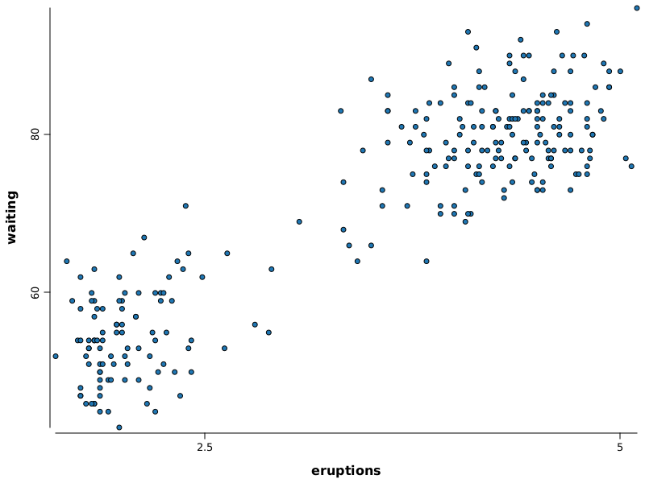
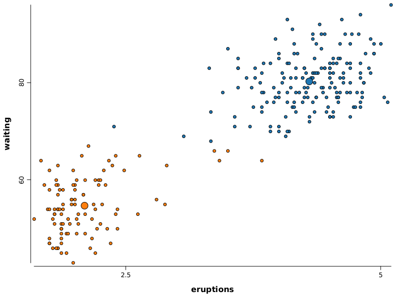

Algorithms: KMeans#
%load ../rapaio-bootstrap.ipynb
Adding dependency io.github.padreati:rapaio-lib:7.0.0
Solving dependencies
Resolved artifacts count: 4
Add to classpath: /home/ati/work/rapaio-jupyter-kernel/target/mima_cache/io/github/padreati/rapaio-lib/7.0.0/rapaio-lib-7.0.0.jar
Add to classpath: /home/ati/work/rapaio-jupyter-kernel/target/mima_cache/io/github/padreati/rapaio-code-gen/7.0.0/rapaio-code-gen-7.0.0.jar
Add to classpath: /home/ati/work/rapaio-jupyter-kernel/target/mima_cache/org/antlr/ST4/4.3.4/ST4-4.3.4.jar
Add to classpath: /home/ati/work/rapaio-jupyter-kernel/target/mima_cache/org/antlr/antlr-runtime/3.5.3/antlr-runtime-3.5.3.jar
// old faithful
Frame old = Datasets.loadOldFaithful();
old.printSummary()
Frame Summary
=============
* rowCount: 272
* complete: 272/272
* varCount: 2
* varNames:
0. eruptions : dbl |
1. waiting : int |
* summary:
eruptions [dbl] waiting [int] Mean : 3.4877831 Mean : 70.8970588
Min. : 1.6000000 Min. : 43.0000000 2nd Qu. : 4.4542500 2nd Qu. : 82.0000000
1st Qu. : 2.1627500 1st Qu. : 58.0000000 Max. : 5.1000000 Max. : 96.0000000
Median : 4.0000000 Median : 76.0000000
WS.image(points(old.rvar("eruptions"), old.rvar("waiting"), pch.circleFull(), fill(3)))

KMCluster model1 = KMCluster.newKMeans().k.set(2);
var res1 = model1.fit(old).predict(old);
res1.printSummary()
Overall errors:
> count: 272
> mean: 32.7270909
> var: 1,622.7494621
> sd: 40.2833646
> inertia/error:8,901.7687209
> iterations:5
Per cluster:
ID count mean var var/total sd
[0] 1 172 31.6604119 1,763.2348144 1.0865724 41.9908897
[1] 2 100 34.5617787 1,391.1074822 0.8572534 37.2975533
WS.image(
points(old.rvar("eruptions"), old.rvar("waiting"), pch.circleFull(), fill(res1.assignment().darray_().add(3.0).dv()), color(0))
.points(model1.getCentroids().rvar("eruptions"), model1.getCentroids().rvar("waiting"), pch.circleFull(), sz(7), fill(3, 4)))
